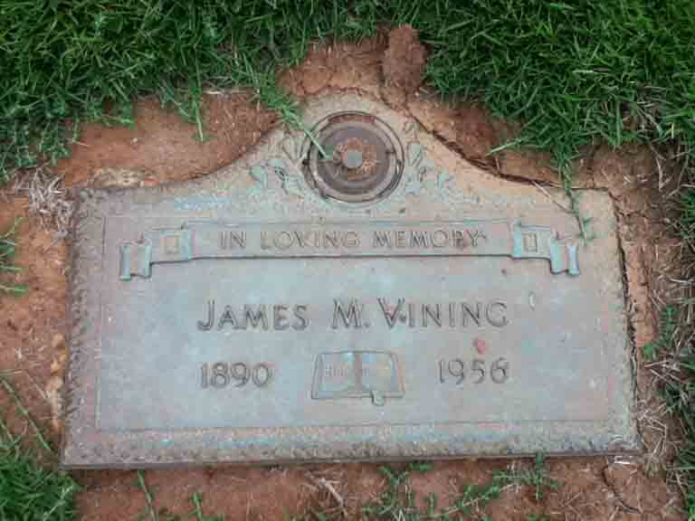
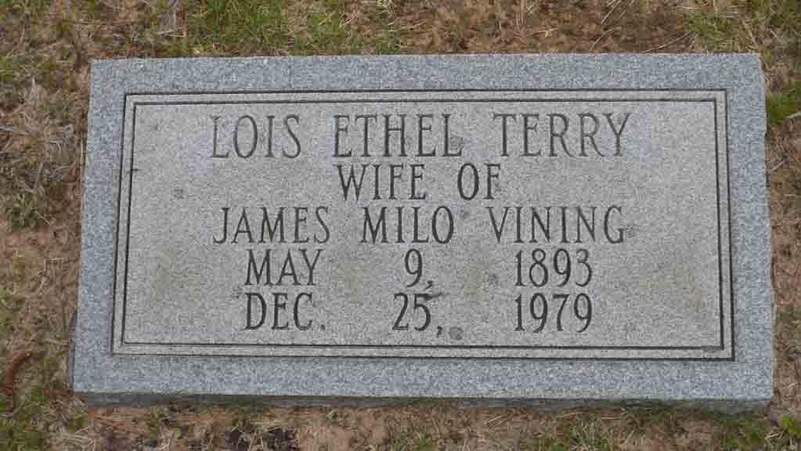

Documentation for James Myloe Vining - Lois Ethel Terry
Death Data
Gravestone for James Myloe Vining, in Montlawn Memorial Park, Raleigh, Wake County, North Carolina (from Find A Grave):

Gravestone for Lois Ethel (Terry) Vining, in Mary Love Cemetery Hamlet, North Carolina (from Find A Grave):
